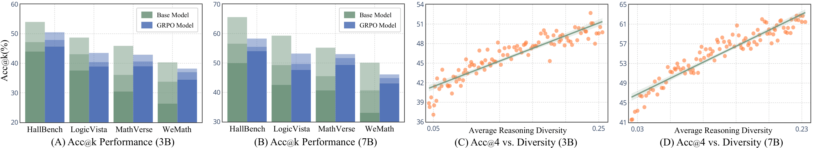
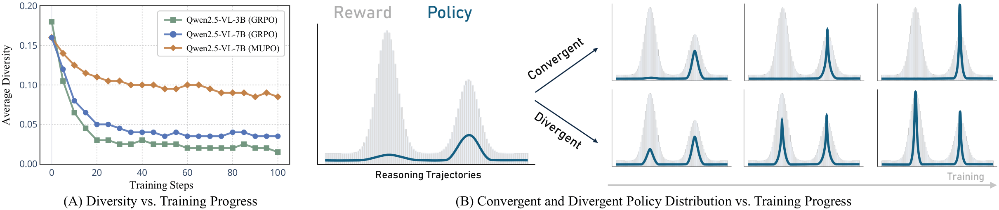
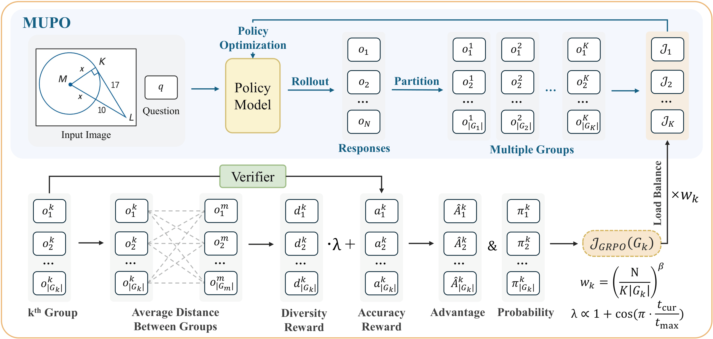
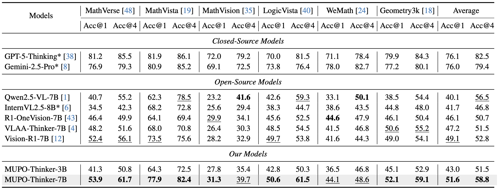

Abstract
Recent studies have demonstrated that Reinforcement Learning (RL), notably Group Relative Policy Optimization (GRPO), can intrinsically elicit and enhance the reasoning capabilities of Vision-Language Models (VLMs). However, despite the promise, the underlying mechanisms that drive the effectiveness of RL models as well as their limitations remain underexplored. In this paper, we highlight a fundamental behavioral distinction between RL and base models, where the former engages in deeper yet narrow reasoning, while base models, despite less refined along individual path, exhibit broader and more diverse thinking patterns. Through further analysis of training dynamics, we show that GRPO is prone to diversity collapse, causing models to prematurely converge to a limited subset of reasoning strategies while discarding the majority of potential alternatives, leading to local optima and poor scalability. To address this, we propose Multi-Group Policy Optimization (MUPO), a simple yet effective approach designed to incentivize divergent thinking across multiple solutions, and demonstrate its effectiveness on established benchmarks.
Do RL Models Truly Outperform Their Base Counterparts?

A common belief is that RL-trained models are strictly superior to their base counterparts. But is this always true? To investigate this, we go beyond the standard single-attempt evaluation and introduce acc@k: a model is considered successful if at least one of k sampled responses leads to the correct answer. This relaxed metric reveals a surprising contrast:
- RL models dive depth, base models seek breadth: When limited to a single attempt (k=1), RL models markedly outperform their base counterparts, reflecting sophisticated reasoning along individual trajectories. However, as k increases, base models succeed in solving substantially more problems, while the gains of RL models remain marginal.
- Base models leverage diverse strategies where RL fails: In cases where RL models cannot find the answer despite multiple attempts, base models often succeed by approaching the problem from alternative angles such as using estimation or elimination instead of brute-force enumeration. These strategies are systematically absent from RL model outputs.
- Diversity correlates strongly with success: Across all benchmarks, there is a strong positive correlation between reasoning diversity and acc@4. Tackling problems through varied strategies, rather than repeating a single mode, dramatically increases the odds of reaching the correct answer.
Root Cause: Diversity Collapse in GRPO Training

To understand why RL models lose their diversity, we track reasoning diversity throughout the GRPO training process. The results are striking: diversity collapses sharply within the first 20 training steps, before the model has even seen most of the training data. This premature convergence has two critical consequences:
- Exploitation over exploration: The model latches onto a dominant reasoning strategy early and spends the vast majority of training refining it, never recovering the discarded alternatives. This renders the optimization susceptible to local optima.
- Limited test-time scalability: Because the model's output distribution is concentrated in a narrow region of reasoning space, sampling more responses provides diminishing returns, and parallel scaling simply draws from the same collapsed mode.
Our Solution: Multi-Group Policy Optimization (MUPO)

We propose Multi-Group Policy Optimization (MUPO), a drop-in replacement for GRPO designed to preserve divergent thinking throughout RL training.
- Embedding-based Group Partitioning: At each training step, the N sampled responses are embedded and partitioned into K groups, where each group captures a semantically distinct reasoning strategy.
- Localized Advantage Estimation: Advantages are normalized within each group rather than globally. This prevents a high-reward dominant strategy from suppressing the relative advantage of correct responses in less common groups.
- Diversity Reward with Cosine Annealing: A diversity reward encourages inter-group separation by rewarding responses whose reasoning embeddings are distant from those in other groups.
Experimental Results

- MUPO establishes a new state of the art: MUPO-Thinker-7B achieves an average acc@1 improvement of +2.5% (49.1% → 51.6%) on mathematical benchmarks and +2.3% (63.3% → 65.6%) on general-purpose benchmarks over previous best results. MUPO-Thinker-3B similarly surpasses all baselines at its scale.
- MUPO exhibits dramatically stronger test-time scaling: Under parallel sampling (acc@4), MUPO-Thinker-7B outperforms existing strong RL baselines by +6.0% on mathematical and +6.2% on general-purpose benchmarks. This gap widens further as k increases, confirming that divergent training directly unlocks parallel scaling capabilities that GRPO forfeits.
- MUPO-Thinker-3B punches above its weight: Under multi-sample evaluation, the 3B model achieves performance comparable to several strong 7B baselines — demonstrating that reasoning diversity is a highly parameter-efficient axis for improvement.
BibTeX
@inproceedings{tian2026allroads,
title={All Roads Lead to Rome: Incentivizing Divergent Thinking in Vision-Language Models},
author={Tian, Xinyu and Zou, Shu and Yang, Zhaoyuan and He, Mengqi and Tu, Peter and Zhang, Jing},
booktitle={CVPR},
year={2026}
}